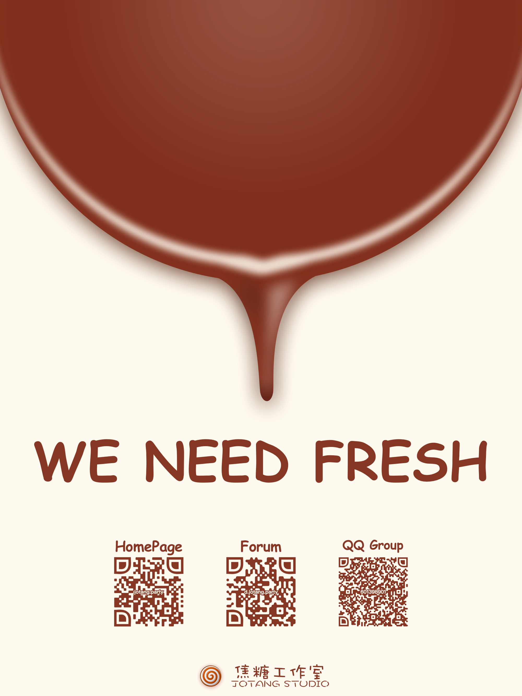

焦糖（JoTang）工作室成立的初衷，
是为每个空有一腔热血却无处播撒的同伴们提供一个施展拳脚的地方，
是为GEEK们搭起一个深入交流的平台，
为所有对未来无限憧憬却又迷茫的萌新们提供一个能让他们健康、自信成长的地方。
我们与众不同————
焦糖工作室是一个以
项目（兴趣）驱动的小型工作室。
我们不会在你一进来的时候让你选定方向，并就此当做你自己的职业目标。
我们不会让你去做一个你不喜欢的项目，不会让你去为了外包苦命搬砖。
我们希望并鼓励你尝试
多个方向，无论是前端还是后端，无论是算法还是产品，只要你想，只要你敢，那么这个机会就一定是你的。
最重要的是，我们愿意给予每一个萌新成长的机会
我们最大的愿望就是每一位萌新都能在焦糖全体成员的努力之下有所收获，
无论最后你是否加入。
这里有很多有趣的人～
有个开发了 Python 社区 Star 数最多的微信公众号开发框架 WeRoBot 的大佬学长
有个十年码龄并且刚和两位北大硕士合作翻译了《OWASP Cheatsheets Book》的码字狗
有个声音软萌刚被国内最大的信息安全在线教育平台破格聘请为讲师的学姐——想端小板凳听学姐讲安全和人工智能的相爱相杀（乖巧.jpg)
有个将辅导员一手送上微博热搜 & 华西都市报、中国青年网的（匿名）少侠
好像还有一群拿奖拿到手软但偏偏一本正经想带萌新的巨巨
好像大佬们唱歌也很剽悍……
......
所以————
欢迎参加（围观）焦糖技术马拉松！
我们精心准备的题目将在宣讲会后一周左右放出。
具体形式可参考论坛上2016年创新工坊的
planB招新方案。
2017年焦糖工作室招新海报：
